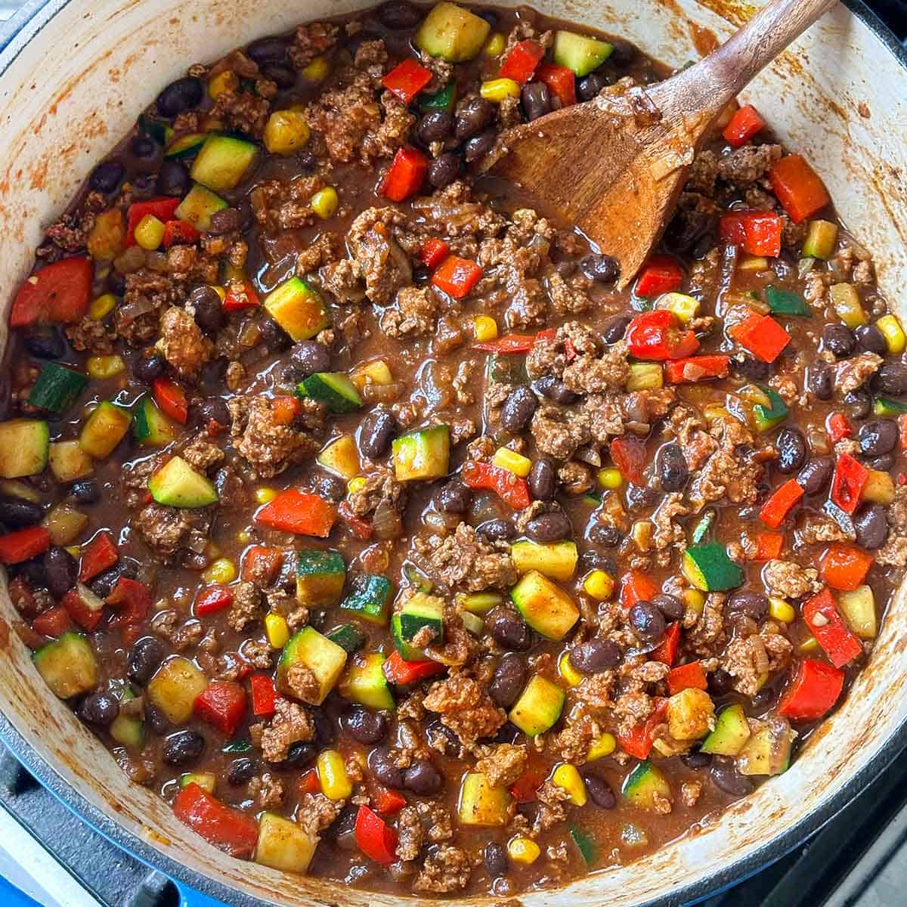

Home
Turkey Chili

Description
This cozy chili recipe is perfect for cold nights or game day!
We will use Turkey as the main source of protein.
Ingredients
- 1 pound ground turkey (90% to 94% lean)
- 1 can (16 oz) kidney beans (or black beans), rinsed and drained
- 1 jar (16 oz) chunky salsa (medium or spicy for maximum flavor)
- Optional pantry additions: 2 tablespoons chili powder and 2 teaspoons ground cumin for extra depth.
Steps
- Brown the turkey: Coat a large skillet or soup pot with a quick mist of cooking spray and set it over medium-high heat. Add the ground turkey and cook for about 6 minutes, using a wooden spoon to break the meat apart into smaller crumbles until it is fully browned.
- Combine: Pour the drained beans and the jar of salsa directly into the pot with the turkey. Stir well to combine all ingredients.
- Simmer: Turn the heat down to medium-low. Let the chili simmer uncovered for 5 to 7 minutes, stirring occasionally, until everything is heated through and the liquid slightly thickens.
- Season & Serve: Give it a quick taste. If you want a punchier flavor, stir in the optional chili powder and cumin. Serve hot in bowls.